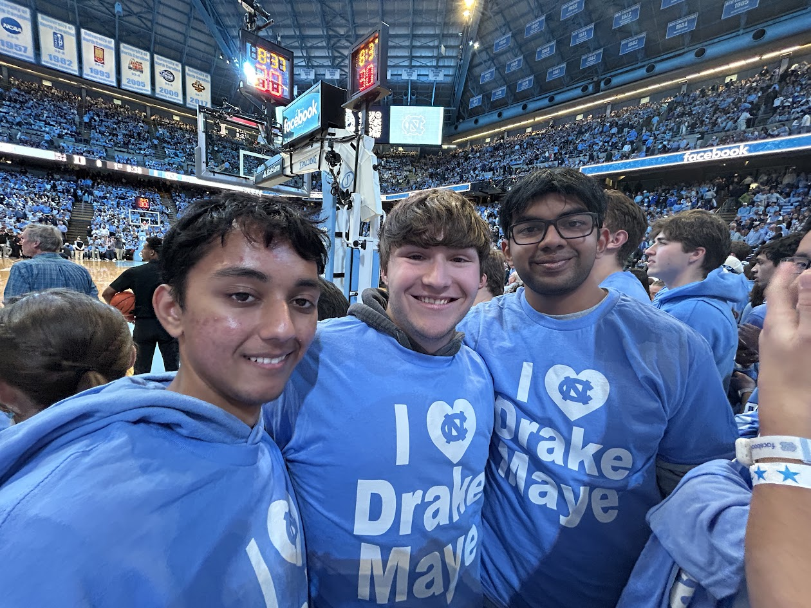
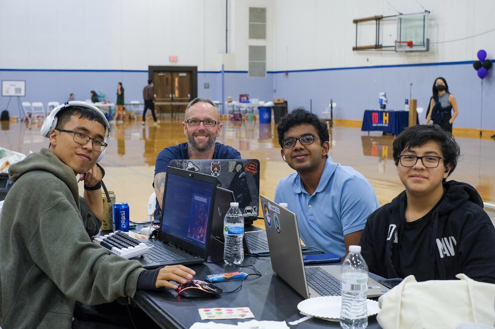
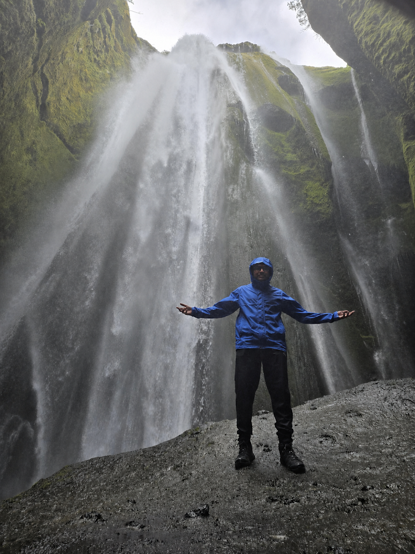
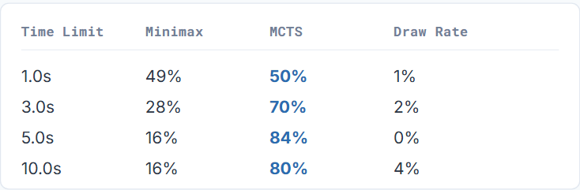
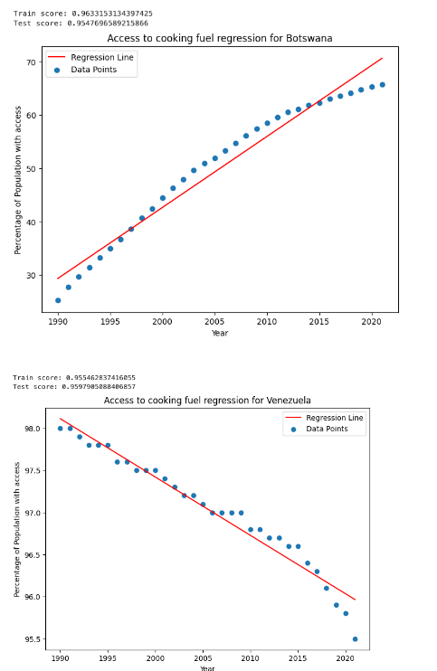
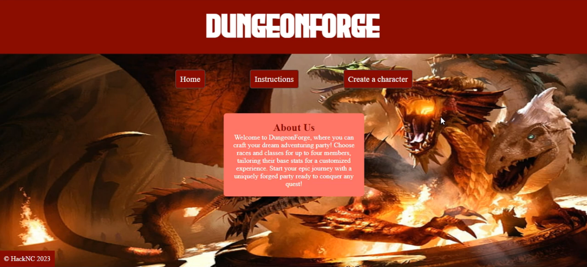

About Me
I am pursuing a double major in Computer Science and Data Science at the University of North Carolina at Chapel Hill. I am interested in software development, data science, and artificial intelligence. Outside of academics, I enjoy playing and watching sports, traveling to new places, and spending time with friends.



Relevant Coursework
- COMP 211 - Systems Fundamentals
- COMP 301 - Foundations of Programming
- COMP 311 - Computer Organization
- COMP 426 - Modern Web Programming
- COMP 550 - Algorithms and Analysis
- COMP 560 - Artificial Intelligence
- COMP 562 - Machine Learning
- STOR 435 - Introduction to Probability
Skills
- Python
- Java
- JavaScript
- SQL
- C
- R
- HTML
- CSS
- Git
Professional learning
Certifications
January 2025 – January 2027
Academy Accreditation — Generative AI Fundamentals
Databricks
Credential ID: 128530919
September 2023
Generative AI Fundamentals
Credential ID: 5303143
January 2020
MTA: Introduction to Programming Using Python
Microsoft
Python Programming
Selected work
Projects

Artificial Intelligence · Team Project
Connect 4: Minimax vs. MCTS
Worked with a team to build and compare two Connect Four AI agents using Minimax with alpha-beta pruning and Monte Carlo Tree Search. Ran 400 head-to-head games across different time constraints to compare the performance of the two algorithms.
Data Analysis · Team Project
Global Trends in Clean Cooking Fuels
Analyzed three decades of global data on access to clean cooking fuels. Cleaned and analyzed data, created visualizations, and built linear regression models to examine trends across different countries.


HackNC 2023 · Team Project
DungeonForge - Dungeons & Dragons Character Creator
Worked with a team at HackNC 2023 to build a web application that generates customizable Dungeons & Dragons characters. Contributed to the HTML, CSS, and JavaScript while building the project during the hackathon.
Get in touch
Email: srineetmanikonda@gmail.com
Phone: (704)-699-0640